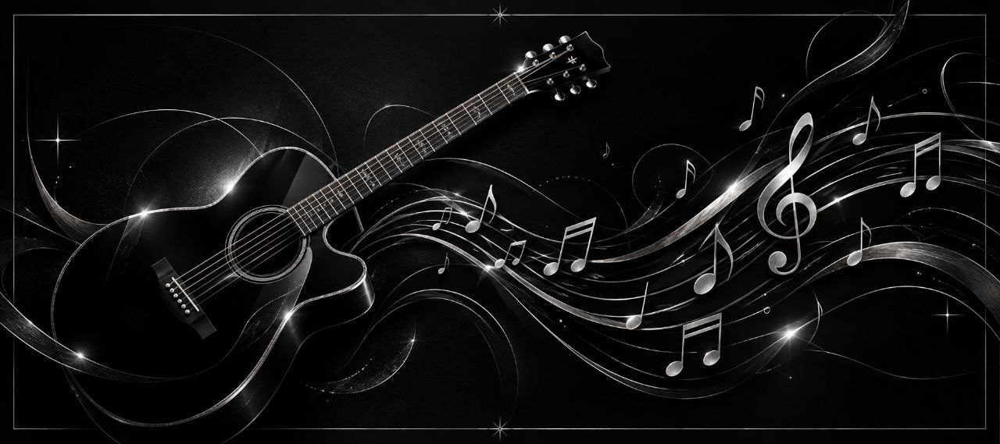

Приветствуем! Спасибо, что остановились послушать. Музыка — это моя жизнь, а улица — моя главная сцена. Здесь вы можете посмотреть мой репертуар, заказать песню или поддержать мое творчество.
Нажмите на любую песню, чтобы открыть текст:
Сколько лет прошло, всё о том же гудят провода
Всё того же ждут самолёты
Девочка с глазами из самого синего льда
Тает под огнём пулемёта
Должен же растаять хоть кто-то
Скоро рассвет, выхода нет
Ключ поверни и полетели
Нужно писать в чью-то тетрадь
Кровью, как в метрополитене
Выхода нет
Выхода нет
Где-то мы расстались, не помню в каких городах
Словно это было в похмелье
Через мои песни идут и идут поезда
Исчезая в тёмном тоннеле
Лишь бы мы проснулись в одной постели
Скоро рассвет, выхода нет
Ключ поверни и полетели
Нужно писать в чью-то тетрадь
Кровью, как в метрополитене
Выхода нет
Выхода нет
Сколько лет пройдёт, всё о том же гудеть проводам
Всё того же ждать самолётам
Девочка с глазами из самого синего льда
Тает под огнём пулемёта
Лишь бы мы проснулись с тобой в одной постели
Скоро рассвет, выхода нет
Ключ поверни и полетели
Нужно писать в чью-то тетрадь
Кровью, как в метрополитене
Выхода нет
Выхода нет
Выхода нет
Выхода нет
Делай вопреки, делай от руки,
Мир переверни, небо опрокинь.
В каждом наброске, в каждом черновике
Учитель продолжается в своем ученике,
Всю мою жизнь я иду ко дну,
Всю мою жизнь я искал любовь, чтобы любить одну.
Они сказали: нас поздно спасать и поздно лечить,
Плевать, ведь наши дети будут лучше, чем мы,
Лучше, чем мы, лучше, чем мы.
Когда меня не станет, я буду петь голосами
Моих детей и голосами их детей.
Нас просто меняют местами,
Таков закон Сансары — круговорот людей.
Ой, мама,
Когда меня не станет, я буду петь голосами
Моих детей и голосами их детей.
Нас просто меняют местами,
Таков закон Сансары — круговорот людей,
Ой, мама.
Нас не стереть, мы живем назло,
Пусть не везет, но мы свое возьмем.
Это небо — вместо сцены, здесь все вверх ногами,
И эти звезды в темноте — тобой зажженный фонарик,
Эй, тысяча меня до меня и после меня будет
Тысяча меня и в тысячах не меня — тыща меня.
И мы снова вдребезги, и нас не починить,
Плевать, ведь наши дети будут лучше, чем мы.
Лучше, чем мы, лучше, чем мы.
Когда меня не станет, я буду петь голосами
Моих детей и голосами их детей.
Нас просто меняют местами,
Таков закон Сансары — круговорот людей.
Ой, мама,
Когда меня не станет, я буду петь голосами
Моих детей и голосами их детей.
Нас просто меняют местами,
Таков закон Сансары — круговорот людей,
Ой, мама От края до края небо в огне сгорает
И в нём исчезают все надежды и мечты,
Но ты засыпаешь, и ангел к тебе слетает,
Смахнёт твои слёзы, и во сне смеёшься ты.
3асыпай на руках у меня, засыпай,
Засыпай под пенье дождя,
Далеко, там, где неба кончается край,
Ты найдёшь потерянный рай.
Во сне хитрый демон
Может пройти сквозь стены,
Дыханье у спящих он умеет похищать.
Бояться не надо, душа моя будет рядом
Твои сновиденья до рассвета охранять.
3асыпай на руках у меня, засыпай,
Засыпай под пенье дождя,
Далеко, там, где неба кончается край,
Ты найдёшь потерянный рай.
Подставлю ладони, их болью своей наполни,
Наполни печалью, страхом гулкой темноты.
И ты не узнаешь, как небо в огне сгорает,
И жизнь разбивает все надежды и мечты.
3асыпай на руках у меня, засыпай,
Засыпай под пенье дождя,
Далеко, там, где неба кончается край,
Ты найдёшь потерянный рай.
В мире снов, в мире снов
В мире снов
В мире снов, в мире снов
В мире снов
Все надежды и мечтыСобираю марки
От чужих конвертов.
Отпускаю мысли,
Так легко по ветру.
Улетает время
Тяжелей, но дольше.
Я тебя не встречу,
Не увижу больше.
Не со мной ты,
Ты не со мной.
Не могу привыкнуть
К глупости и фальши –
Ты была так близко,
Ты теперь все дальше.
Ты вчера ходила
На «Агату Кристи»* –
Я пинал по скверу
Золотые листья.
Не со мной ты,
Ты не со мной.
Разливал в стаканы
Я «Киндзмараули»**,
И чужие руки
Резали сугуни.
Пела она песни –
Плохие да фальшиво,
В голове стучалось –
Без тебя паршиво
Не со мной ты,
Ты не со мной.Remember those walls I built?
Well, baby, they're tumbling down
And they didn't even put up a fight
They didn't even make a sound
I found a way to let you in
But I never really had a doubt
Standin' in the light of your halo
I got my angel now
It's like I've been awakened
Every rule I had you breakin'
It's the risk that I'm takin'
I ain't never gonna shut you out
Everywhere I'm lookin' now
I'm surrounded by your embrace
Baby, I can see your halo
You know you're my saving grace
You're everything I need and more
It's written all over your face
Baby, I can feel your halo
Pray it won't fade away
Hit me like a ray of sun
Burning through my darkest night
You're the only one that I want
Think I'm addicted to your light
I swore I'd never fall again
But this don't even feel like fallin'
Gravity can't begin
To pull me back to the ground again
It's like I've been awakened
Every rule I had you breakin'
The risk that I'm takin'
I'm never gonna shut you out
Everywhere I'm lookin' now
I'm surrounded by your embrace
Baby, I can see your halo
You know you're my saving grace
You're everything I need and more
It's written all over your face
Baby, I can feel your halo
Pray it won't fade away
Everywhere I'm lookin' now
I'm surrounded by your embrace
Baby, I can see your halo
You know you're my saving grace
You're everything I need and more
It's written all over your face
Baby, I can feel your halo
Pray it won't fade away
Холодный ветер с дождём усилился стократно Всё говорит об одном, что нет пути обратно Что ты не мой лопушок, а я не твой Андрейка Что у любви у нашей села батарейка О-оу-и-я-и-ё Батарейка О-оу-и-я-и-ё Батарейка Я тосковал по тебе в минуты расставанья Ты возвращалась ко мне сквозь сны и расстоянья Но несмотря ни на что пришла судьба-злодейка И у любви у нашей села батарейка О-оу-и-я-и-ё Батарейка О-оу-и-я-и-ё Батарейка И вроде всё как всегда: всё те же чашки, ложки Всё та же в кране вода, всё тот же стул без ножки И всё о том же с утра щебечет канарейка Лишь у любви у нашей села батарейка О-оу-и-я-и-ё Батарейка О-оу-и-я-и-ё Батарейка О-оу-и-я-и-ё Батарейка О-оу-и-я-и-ё Батарейка О-оу-и-я-и-ё Батарейка О-оу-и-я-и-ё Батарейка О-оу-и-я-и-ё Батарейка О-оу-и-я-и-ё Батарейка
Тёмно-оранжевый закат на фоне потресканных домов Ты так хотела рассказать ему, насколько тяжело Ты так хотела показать ему прокуренный балкон У тебя слёзы на глазах, у него — целый горизонт Не плачь, прошу, я тоже не вывожу Держись, держу, у-у-у Светло-голубой рассвет снова укладывает спать Ложиться смысла уже нет, он вынуждает закрывать Глаза, чтобы не видеть всё, что ты успела потерять Когда проснёшься, тебя ждёт тёмно-оранжевый закат Не плачь, прошу, я тоже не вывожу Держись, держу, у-у-у
Надо мною тишина, небо полное дождя Дождь проходит сквозь меня, но боли больше нет Под холодный шёпот звёзд мы сожгли последний мост И всё в бездну сорвалось. Свободным стану я от зла и от добра Моя душа была на лезвии ножа Я бы мог с тобою быть, я бы мог про всё забыть Я бы мог тебя любить, но это лишь игра В шуме ветра за спиной я забуду голос твой И о той любви земной, что нас сжигала в прах, и я сходил с ума В моей душе нет больше места для тебя Я свободен, словно птица в небесах! Я свободен, я забыл, что значит страх! Я свободен, с диким ветром наравне! Я свободен наяву, а не во сне! Надо мною тишина, небо полное огня Свет проходит сквозь меня, и я свободен вновь Я свободен от любви, от вражды и от молвы От предсказанной судьбы и от земных оков, от зла и от добра В моей душе нет места больше для тебя Я свободен, словно птица в небесах! Я свободен, я забыл, что значит страх! Я свободен, с диким ветром наравне! Я свободен наяву, а не во сне! Я свободен, словно птица в небесах! Я свободен, я забыл, что значит страх! Я свободен, с диким ветром наравне! Я свободен наяву, а не во сне!
Я не лягу под ноги к тебе, никогда! Вот так, раненый в сердце тобой буду страдать. Я не знаю, что у тебя на уме. Да и не хочу! За тихую радость, что даришь мне не представляю чем расплачусь. Знаешь, моя душа рваная - вся тебе! Пусть будешь лучше ты всегда пьяная, но ближе ко мне. Знаешь, моя душа рваная - вся тебе! Пусть будешь лучше ты всегда пьяная, но ближе ко мне. Взвесить все "Против" и "За" - не можешь, я понял сам. Ведь разные части делят на два, внутри тебя, там. Мне надо бы стать умней и чаще молчать. Я просто привязал бы тебя к себе, чтоб всю жизнь целовать. Знаешь, моя душа рваная - вся тебе! Пусть будешь лучше ты всегда пьяная, но ближе ко мне. Знаешь, моя душа рваная - вся тебе! Пусть будешь лучше ты всегда пьяная, но ближе ко мне. Если не берешь телефон, значит ты сейчас со мной. Оставить все дела на потом, просто побыть вдвоем. Если не берешь телефон, значит ты сейчас со мной. Оставить все дела на потом, просто побыть вдвоем. Знаешь, моя душа рваная - вся тебе! Пусть будешь лучше ты всегда пьяная, но ближе ко мне. Знаешь, моя душа рваная - вся, вся душа тебе! Пусть будешь лучше ты всегда пьяная, но ближе, ближе, ближе ко мне
Ты открывал ночь, всё, что могли позволить Маски срывал прочь, душу держал в неволе Пусть на щеке кровь, ты свалишь на помаду К чёрту барьер слов — ангелу слов не надо А мы не ангелы, парень, нет, мы не ангелы Тёмные твари, и сорваны планки, но Если нас спросят, чего мы хотели бы Мы бы взлетели, мы бы взлетели Мы не ангелы, парень, нет, мы не ангелы Там, на пожаре, утратили ранги мы Нету к таким ни любви, ни доверия Люди глядят на наличие перьев Мы не ангелы, парень Сотни чужих крыш — что ты искал там, парень Ты так давно спишь, слишком давно для твари Может, пора вниз, там, где ты дышишь телом Брось свой пустой лист — твари не ходят в белом А мы не ангелы, парень, нет, мы не ангелы Тёмные твари, и сорваны планки, но Если нас спросят, чего мы хотели бы Мы бы взлетели, мы бы взлетели
Я провожу тебя до лифта и обниму Я твоей матери не нравлюсь по-моему Придумай, где ты была все четыре дня Засосы замаскируй, не сдавай меня Если увидят, нам попадёт поровну Хорошо, что окна в другую сторону Плохо, что наше с тобой время истекло И я иду домой, уже совсем светло Это не первое и не последнее утро, что я тебе подарю Мы слишком молоды, чтобы вести себя мудро Я знаю, что говорю Это не первое и не последнее утро Никто не отнимет их Мы подозрительно мудрые для молодых И шире некуда улыбка на лице Ни одного человека на улице И горизонт возбуждённо порозовел А я замёрз — судя по всему, протрезвел И тишина, лишь деревья одни шумят Иду по городу, я доволен и помят Мимо аллей и гаражей, вот и мой дом Извините, я спать. Побеседуем потом Это не первое и не последнее утро, что я тебе подарю Мы слишком молоды, чтобы вести себя мудро Я знаю, что говорю Это не первое и не последнее утро Никто не отнимет их Мы подозрительно мудрые для молодых
Я не хочу курить после любви Я хочу наслаждаться тобой И ничего тебе не надо говорить Ты без слов прогнала мою боль И ты такая даже не знаю Как описать тебя Нет слов Просто нет слов На моём плече засыпает моё счастье Счастье Счастье моё — быть с тобой вдвоём Счастье моё — возвращаться домой Когда вокруг бесконечный бой В моём сердце мир В моём сердце покой Я не хочу искать сотни других Следы которых не видел в тебе Ты заменила мне целый мир И я спасу этот мир от всех бед Ты не такая, как все Все не такие, как ты Но мы в друг друге нашли все наши мечты На моём плече засыпает моё счастье Счастье Счастье моё — быть с тобой вдвоём Счастье моё — возвращаться домой Когда вокруг бесконечный бой В моём сердце мир В моём сердце покой Счастье, счастье
Я её полюбил за её красоту За большие глаза, за золотую косу А ей нужен танкист, в шлеме и в галифе А ей нужен танкист, косая сажень в плече И шо вы думаете она сказала? Да у тебя же мама - педагог Да у тебя же папа - пианист Да у тебя же все наоборот Какой ты на фиг танкист Я её полюбил за её красоту За большие глаза, за золотую косу Я три ночи не спал, кругом шла голова А в ответ получал одни и те же слова Да у тебя же мама - педагог Да у тебя же папа - пианист Да у тебя же все наоборот Какой ты на фиг танкист
Штиль, ветер молчит Упал белой чайкой на дно Штиль, наш корабль забыт Один в мире скованном сном Между всех времён, без имён и лиц Мы уже не ждём, что проснётся бриз Штиль, сходим с ума Жара пахнет чёрной смолой Смерть одного лишь нужна И мы, мы вернёмся домой Его плоть и кровь вновь насытят нас А за смерть ему может Бог воздаст Что нас ждёт? Море хранит молчанье Жажда жить сушит сердца до дна Только жизнь здесь ничего не стоит Жизнь других, но не твоя! Нет, гром не грянул с небес Когда пили кровь, как зверьё Но нестерпимым стал блеск Креста, что мы Южным зовём И в последний миг поднялась волна И раздался крик: "Впереди земля!" Что нас ждёт? Море хранит молчанье Жажда жить сушит сердца до дна Только жизнь здесь ничего не стоит Жизнь других, но не твоя!
Это так просто с тобой быть собой И вне обстоятельств мы Это как я понимаю любовь В красивом принятии Смело так смотришь в меня глубже глаз Мы ближе чем рядом с тобой Мы ближе чем рядом сейчас Я ничья, я всей вселенной и тебе Со мной с такой по пути Я - твоя, хоть ты не присвоил себе Мы знак бесконечности И у нас чувства важней, чем слова А мы с тобой люди рейва А мы с тобой дети рейва Мы оба раздеты, но нам так теплее Мы ловим рассветы в окно Холодное лето проводим в постели Мы вроде бы два, но одно Мы два, но одно О-о, о-о, о-о, о-о О-о, о-о, о-о, о-о, о-о О-о, о-о, о-о, о-о Одно Не держусь и не боюсь потерять Смотри в этом красоту Пусть твой путь к себе лежит сквозь меня И мой тоже где-то тут Пустоту я не заполняю тобой А в месте, где раньше контроль Сейчас торжествует любовь Мы оба раздеты, но нам так теплее Мы ловим рассветы в окно Холодное лето проводим в постели Мы вроде бы два, но одно Мы два, но одно О-о, о-о, о-о, о-о О-о, о-о, о-о, о-о, о-о О-о, о-о, о-о, о-о Одно Мы два, но одно
Пылью наполнены обе сандалии В поисках гения по спирали Хлопьями воздуха манит дорога Голоса нет, аллергия Не многого надо Поцелуй от помады Побережье Невады И кофе глясе Когда тебе рады Любовь до упада И дождливое танго! Так бежим по шоссе! Это мой нулевой километр! Пожирает сентябрьский полдень По колёсам играет оркестр Камень за камнем, камень за камнем Это мой нулевой километр! Начинаю отсчёт от Казани Мы построим Китайскую стену здесь! Камень за камнем Пересекающий ток расстояния Беспрерывное эхо молчаливых признаний Я подарю поцелуй и три слова Голоса нет, аллергия — так многого надо Простыню и пижаму Взгляд принцессы Дианы И запой по весне Еще два банана Нежности от коалы Может просто устали? Ну, так бежим по шоссе! Это мой нулевой километр! Пожирает сентябрьский полдень По колёсам играет оркестр Камень за камнем, камень за камнем
Где лучшее из времён Кажется, что оно Только не здесь, не рядом Мне лучшее из имён Трудно произнести Трудно, но очень надо И я не могу принять Эту свою судьбу Если она с твоей не схожа И я не хочу отнять Сердце твоё у тех Кто без тебя уже не сможет Я знаю только лучшее в тебе Мне от любви не страшно задохнуться Мы наяву живём, а не во сне А я всё не могу никак проснуться Скажу "люблю" и это навсегда Пускай смешно, пусть надо мной смеются Рассыпаны созвездья-города И наши самолёты в небе разминутся Пусть сотни случайных глаз Ищут случайных драм Тянут к себе магнитом Грусть первым кого из нас Переберёт по швам Мы ведь так крепко сшиты Знай, нам не дано с тобой Время остановить Или сойти за поворотом Рай каждому будет свой Но я возьму с собой Нежные наши дни и ноты Я знаю только лучшее в тебе Мне от любви не страшно задохнуться Мы наяву живём, а не во сне А я всё не могу никак проснуться Скажу "люблю" и это навсегда Пускай смешно, пусть надо мной смеются Рассыпаны созвездья-города И наши самолёты в небе разминутся
Зачем кричать, когда никто не слышит О чём мы говорим? Мне кажется, что мы давно не живы Зажглись и потихоньку догорим Когда нас много, начинается пожар И города похожи на крематорий и базар И все привыкли ничего не замечать Когда тебя не слышат, для чего кричать? Мы можем помолчать, мы можем петь Стоять или бежать, но всё равно гореть Огромный синий кит порвать не может сеть Сдаваться или нет, но всё равно гореть И снова небо замыкает на себя Слова и провода И снова с неба проливаются на нас Ответы и вода И если ты вдруг начал что-то понимать И от прозрения захотелось загорать Давай, беги, но тебя могут не понять Никто из них не хочет ничего менять Ты можешь замолчать, ты можешь петь Стоять или бежать, но всё равно гореть Огромный синий кит порвать не может сеть Сдаваться или нет, но всё равно гореть Мы можем помолчать, мы можем петь Стоять или бежать, но всё равно гореть Гори, но не сжигай, иначе скучно жить Гори, но не сжигай, гони, чтобы светить
I'm wakin' up to ash and dust I wipe my brow, and I sweat my rust I'm breathin' in the chemicals I'm breakin' in, shapin' up Then checkin' out on the prison bus This is it, the apocalypse, whoa I'm wakin' up, I feel it in my bones Enough to make my system blow Welcome to the new age, to the new age Welcome to the new age, to the new age Whoa, oh, whoa, I'm Radioactive, radioactive Whoa, oh, whoa, I'm Radioactive, radioactive I raise my flag, dye my clothes It's a revolution, I suppose We're painted red to fit right in, whoa I'm breakin' in and shapin' up Then checkin' out on the prison bus This is it, the apocalypse, whoa I'm wakin' up, I feel it in my bones Enough to make my system blow Welcome to the new age, to the new age Welcome to the new age, to the new age Whoa, oh, whoa, I'm Radioactive, radioactive Whoa, oh, whoa, I'm Radioactive, radioactive All systems go The sun hasn't died Deep in my bones Straight from inside I'm wakin' up, I feel it in my bones Enough to make my system blow Welcome to the new age, to the new age Welcome to the new age, to the new age Whoa, oh, whoa, I'm Radioactive, radioactive Whoa, oh, whoa, I'm Radioactive, radioactive
Больше нечего ловить Всё, что надо, я поймал Надо сразу уходить Чтоб никто не привыкал Ярко-жёлтые очки Два сердечка на брелке Развесёлые зрачки Твоё имя на руке Районы, кварталы, жилые массивы Я ухожу, ухожу красиво Районы, кварталы, жилые массивы Я ухожу, ухожу красиво У тебя всё будет класс Будут ближе облака Я хочу как в первый раз И поэтому пока Ярко-жёлтые очки Два сердечка на брелке Развесёлые зрачки Я шагаю налегке Районы, кварталы, жилые массивы Я ухожу, ухожу красиво Районы, кварталы, жилые массивы Я ухожу, ухожу красиво Вот и всё, никто не ждёт И никто не в дураках Кто-то любит, кто-то врёт И летает в облаках Ярко-жёлтые очки Два сердечка на брелке Развесёлые зрачки Я шагаю налегке Районы, кварталы, жилые массивы Я ухожу, ухожу красиво Районы, кварталы, жилые массивы Я ухожу, ухожу красиво Я ухожу, ухожу красиво
Кто-то ушел на дно, а кому-то всё равно Погрустили, а завтра забыли Будто не были и не любили Кто-то ушел наверх, то есть ушел навек И следит, улыбаясь, за нами Сквозь глаза наших воспоминаний Так пускай наступает холодным рассветом на нас новый день Всё останется в этой вселенной Всё вращается в этой вселенной Возвращается к нам, запуская круги на воде Ничего не проходит бесследно Ничего не проходит бесследно Чей-то случайный ход Фатальный поворот Мы друг друга на этой спирали Обретали и снова теряли И остаётся нам, холодным городам Просто ждать, когда станет теплее И дышать ни о чем не жалея Так пускай наступает холодным рассветом на нас новый день Всё останется в этой вселенной Всё вращается в этой вселенной Возвращается к нам, запуская круги на воде Ничего не проходит бесследно Ничего не проходит бесследно
Кофе – мой друг, музыка – мой драг И всё, что вокруг – я могу сыграть Дорога – мой дом, небо – моя тетрадь Пока мы вдвоём, мы точно не будем спать Кофе – мой друг, музыка – мой драг И всё что вокруг – я могу сыграть Дорога – мой дом, небо – моя тетрадь Пока мы вдвоём, мы точно не будем спать Ночь меня ждёт за мокрым стеклом Она всё поймёт в молчании слов По струнам мой долг доводит до слёз Ты плачешь, ну что, всё снова всерьёз Кофе – мой друг, музыка – мой драг И всё, что вокруг – я могу сыграть Дорога – мой дом, небо – моя тетрадь Пока мы вдвоём, мы точно не будем спать
When the days are cold and the cards all fold And the saints we see are all made of gold When your dreams all fail and the ones we hail Are the worst of all and the blood's run stale I wanna hide the truth, I wanna shelter you But with the beast inside, there's nowhere we can hide No matter what we breed, we still are made of greed This is my kingdom come, this is my kingdom come (Oh-oh-oh) when you feel my heat, look into my eyes It's where my demons hide, it's where my demons hide (Oh-oh-oh) don't get too close, it's dark inside It's where my demons hide, it's where my demons hide Curtain's call, it's the last of all When the lights fade out, all the sinners crawl So they dug your grave and the masquerade Will come calling out at the mess you've made Don't wanna let you down, but I am hellbound Though this is all for you, don't wanna hide the truth No matter what we breed, we still are made of greed This is my kingdom come, this is my kingdom come (Oh-oh-oh) when you feel my heat, look into my eyes It's where my demons hide, it's where my demons hide (Oh-oh-oh) don't get too close, it's dark inside It's where my demons hide, it's where my demons hide They say it's what you make, I say it's up to fate It's woven in my soul, I need to let you go Your eyes, they shine so bright, I wanna save that light I can't escape this now, unless you show me how (Oh-oh-oh) when you feel my heat, look into my eyes It's where my demons hide, it's where my demons hide (Oh-oh-oh) don't get too close, it's dark inside It's where my demons hide, it's where my demons hide
Сигарета мелькает во тьме Ветер пепел в лицо швырнул мне И обугленный фильтр на пальцах мне оставил ожог Скрипнув сталью, открылася дверь Ты идёшь, ты моя теперь Я приятную дрожь ощущаю с головы до ног! Ты со мною забудь обо всём Эта ночь нам покажется сном Я возьму тебя и прижму, как родную дочь, аха Нас окутает дым сигарет Ты уйдёшь, как настанет рассвет И следы на постели напомнят про счастливую ночь Эротичный лунный свет Запретит сказать тебе нет И опустится плавно на пол всё твоё бельё Шум деревьев и ветер ночной Стон заглушат твой и мой И биение сердца, пылающего адским огнём! Ты со мною забудь обо всём Эта ночь нам покажется сном Я возьму тебя и прижму, как родную дочь, аха Нас окутает дым сигарет Ты уйдёшь, как настанет рассвет И следы на постели напомнят про счастливую ночь Твои бёдра в сиянии луны Так прекрасны и мне так нужны Кровь тяжёлым напором ударит прямо в сердце мне Груди плавно качнутся в ночи Слышишь, как моё сердце стучит? Два пылающих тела сольются в ночной тишине! Ты со мною забудь обо всём Эта ночь нам покажется сном Я возьму тебя и прижму, как родную дочь, аха Нас окутает дым сигарет Ты уйдёшь, как настанет рассвет И следы на постели напомнят про счастливую ночь Ты со мною забудь обо всём Эта ночь нам покажется сном Я возьму тебя и прижму, как родную дочь, аха Нас окутает дым сигарет Ты уйдёшь, как настанет рассвет И следы на постели напомнят про счастливую ночь И следы на постели напомнят про счастливую ночь И следы на постели напомнят про счастливую ночь
В заросшем парке стоит старинный дом Забиты окна, и мрак царит извечно в нём Сказать я пытался: "Чудовищ нет на земле" Но тут же раздался ужасный голос во мгле Голос во мгле "Мне больно видеть белый свет, мне лучше в полной темноте Я очень много-много лет мечтаю только о еде Мне слишком тесно взаперти, и я мечтаю об одном Скорей свободу обрести, прогрызть свой ветхий старый дом Проклятый старый дом" Был дед, да помер, слепой и жутко злой Никто не вспомнил о нём с зимы холодной той Соседи не стали его тогда хоронить Лишь доски достали, решили заколотить Двери и окна "Мне больно видеть белый свет, мне лучше в полной темноте Я очень много-много лет мечтаю только о еде Мне слишком тесно взаперти, и я мечтаю об одном Скорей свободу обрести, прогрызть свой ветхий старый дом Проклятый старый дом" И это место стороной обходит сельский люд И суеверные твердят: "Там призраки живут"
Тёмный, мрачный коридор Я на цыпочках, как вор Пробираюсь, чуть дыша Чтобы не вспугнуть Тех, кто спит уже давно Тех, кому не всё равно В чью я комнату тайком Желаю заглянуть Чтобы увидеть Как бессонница в час ночной Меняет, нелюдимая, облик твой Чьих невольница ты идей? Зачем тебе охотиться на людей? Крестик на моей груди На него ты погляди Что в тебе способен он Резко изменить? Много книжек я читал Много фокусов видал Свою тайну от меня Не пытайся скрыть! Я это видел! Как бессонница в час ночной Меняет, нелюдимая, облик твой Чьих невольница ты идей? Зачем тебе охотиться на людей? Очень жаль, что ты тогда Мне поверить не смогла В то, что новый твой приятель Не такой, как все! Ты осталась с ним вдвоём Не зная ничего о нём Что для всех опасен он Наплевать тебе! И ты попала! К настоящему колдуну Он загубил таких, как ты, не одну! Словно куклой в час ночной Теперь он может управлять тобой! Всё происходит, будто в страшном сне И находиться здесь опасно мне!
She sits in her corner Singing herself to sleep Wrapped in all of the promises That no one seems to keep She no longer cries to herself No tears left to wash away Just diaries of empty pages Feelings gone astray But she will sing 'Til everything burns While everyone screams Burning their lies Burning my dreams All of this hate And all of this pain I'll burn it all down As my anger rains 'Til everything burns Walking through life unnoticed Knowing that no one cares Too consumed in their masquerade No one sees her there And still she sings 'Til everything burns While everyone screams Burning their lies Burning my dreams All of this hate And all of this pain I'll burn it all down As my anger rains 'Til everything burns Everything burns Everything burns Everything burns (watching it all fade away) All fade away, everyone screams Everyone screams (watching it all fade away) 'Til everything burns While everyone screams Burning their lies Burning my dreams All of this hate And all of this pain I'll burn it all down As my anger rains 'Til everything burns
Тебе не нравится дым — чёрт с ним Он убивает слова, кругом голова Уже разносит молва по дворам Что между нами чиуауа О чём с тобой говорить? Потеряли нить Быть не собой перестать и дома спать Нас не измерить на глаз, а сейчас Зачем мы давим на тормоз, не на газ? Вопрос извечный — зачем да почему Я понемногу с ума, ты не сама А эти ночи в Крыму теперь кому? Я, если встречу, потом передам ему Писклявый твой голосок как электрошок Что я бухой без вина — твоя вина Теперь узнает страна до темна Им донесут обо всём на FM-волнах Я помню: белые обои, чёрная посуда Нас в хрущёвке двое, кто мы и откуда, откуда? Задвигаем шторы, кофеёк, плюшки стынут Объясните теперь нам, вахтёры, почему я на ней так сдвинут Давай вот так просидим до утра Не уходи, погоди — но мне пора И если выход один впереди То почему мы то холод, то жара? Раскладывать по местам я устал И поворачивать вспять, ну вот опять Прикосновения плавили мой металл Ты элемент номер пять, ни дать ни взять Идёт к финалу игра в этот раз А ты всё так же молчишь, я говорю Минут 15 осталось до утра Не вызывай, так словлю и свалю Попробуем всё подшить, не ворошить Мобильные номера постирать А уходить не спросив нету сил Давай попробуем заново всё собрать Белые обои, чёрную посуду Нас в хрущёвке двое, кто мы и откуда, откуда? Задвигай шторы, кофеёк, плюшки стынут Объясните теперь нам, вахтёры, почему я на ней так сдвинут Я помню: белые обои, чёрная посуда Нас в хрущёвке двое, кто мы и откуда, откуда? Задвигаем шторы, кофеёк, плюшки стынут Объясните теперь нам, вахтёры, почему я на ней так сдвинут
Было хорошо, было так легко Но на шею бросили аркан Солнечный огонь атмосферы бронь Пробивал, но не пробил туман И мёртвый месяц еле освещает путь И звёзды давят нам на грудь, не продохнуть И воздух ядовит, как ртуть Нельзя свернуть, нельзя шагнуть И не пройти нам этот путь в такой туман А куда шагнуть, Бог покажет путь Бог для нас всегда бесплотный вождь Нас бросает в дрожь, вдруг начался дождь Нас добьёт конкретный сильный дождь И месяц провоцирует нас на обман И испарение земли бьёт как дурман И каждый пень нам как капкан И хлещет кровь из наших ран И не пройти нам этот путь в такой туман Всё пошло на сдвиг, наша жизнь как миг Коротка, как юбка у путан Нам всё нипочём, через левое плечо Плюнем и пойдём через туман Пусть мёртвый месяц еле освещает путь Пусть звёзды давят нам на грудь, не продохнуть Пусть воздух ядовит, как ртуть И пусть не видно, где свернуть Но мы пройдём опасный путь через туман
И то, что было набело (набело), откроется потом Мой рок-н-ролл — это не цель и даже не средство Не новое, а заново (заново), один и об одном Дорога — мой дом, и для любви это не место Прольются все слова, как дождь И там, где ты меня не ждёшь Ночные ветры принесут тебе прохладу На наших лицах без ответа лишь только отблески рассвета Того (того), где ты меня не ждёшь А дальше, это главное (главное): похожий на тебя В долгом пути я заплету волосы лентой И не способный на покой, я знак подам тебе рукой Прощаясь с тобой (с тобой), как будто с легендой Прольются все слова, как дождь И там, где ты меня не ждёшь Ночные ветры принесут тебе прохладу На наших лицах без ответа лишь только отблески рассвета Того (того), где ты меня не ждёшь И то, что было набело, откроется потом Мой рок-н-ролл — это не цель и даже не средство Не новое, а заново (заново), один и об одном Дорога — мой дом, и для любви это не место
Мы снова говорим глазами И волны мыслей между нами Это безумные цунами Горячие как будто пламя И нас не потревожит кто-то На телефонах самолёты Мы недоступны для всех Мы в космосе... Ты просто дыши со мной Просто глаза закрой Просто будь здесь сейчас И будь со мною собой Часы, секунды и минуты Исчезли все для нас как будто Нам незачем с тобой ругаться И очень хочется обняться Мы можем целоваться вечно Безумно и бесчеловечно В ритме горячем дыши Со мной дыши Ты просто дыши со мной Просто глаза закрой Просто будь здесь сейчас И будь со мною собой
Волны горячего света в наших глазах Пульсирует время внутри под бит только для нас. Наши тайны скрывали сознанья, Но время сорвало одежды их лжи с наших глаз. Для нас больше нет никаких запретов, Мы будто бы в мире одни. Сотни звёзд проносятся мимо нас, Мы и время, и планеты, и пустота. Есть только мы, и волны внутри. Сейчас. Ты мой бескрайний космос, Я твои звёзды и чёрные дыры. Вдвоём нам безумно просто, Вселенная светит пока мы живы. Я твой бескрайний космос, Ты мои звёзды и чёрные дыры. Вдвоём нам безумно просто, Вселенная светит пока мы живы. Наши атомы сплетены. Наши кванты запутаны. Мы делим вечность на пополам, Мы неизвестность, но мы важны. Для нас больше нет никаких запретов, Мы будто бы во всех мирах одни. Сотни звёзд проносятся мимо нас, Мы и время, и планеты, и пустота. Есть только мы, и волны внутри. Сейчас. Ты мой бескрайний космос, Я твои звёзды и чёрные дыры. Вдвоём нам безумно просто, Вселенная светит пока мы живы. Я твой бескрайний космос, Ты мои звёзды и чёрные дыры. Вдвоём нам безумно просто, Вселенная светит пока мы живы.
Сижу и смотрю на дождь Только думаю все вовсе не о дожде Между нами давно всё решено но Новая ночь и ты снишься мне Капли падают на стекло Но как будто не снаружи, а внутри Мой расфокусированный взгляд Снова видео о нас с тобой творит Фонари горят за окном Отражаясь на лужах пятнами Жаль что мы сейчас не вдвоём Я хотел бы обнять тебя хоть на миг Кружка кофе пахнет тобой Вызывая вдохновения прилив Ну зачем мы убили любовь И потерять друг друга смогли В моей комнате так же темно У дивана разбросаны носки Я пошел бы и сел за комп Чтобы чувства в порядок привести И стою, слушаю стук оконный И возможно ты так же где-то стоишь Мы с тобой всегда были синхронны Я смотрю на телефон, вот и ты звонишь Ало... — Женская часть — Фонари горят за окном Отражаясь на лужах пятнами Жаль что мы сейчас не вдвоём Я хотела бы обнять тебя хоть на миг Свежий воздух пахнет тобой Моё сердце не может отпустить Наша видимо бессмертна любовь И она начинает вновь расти
Небо внутри и снаружи я Сотни светил и ночная тьма Горы, расветы и облака У меня под одеждой вселенная Голос и звуки моей души Слушай и просто со мной дыши Руки продолжат тебе играть Я зову тебя в этот мир погулять Возьми мою Ладонь в свою Я для тебя Одной пою Танцуй как свет Как хвост комет Рисуй как дождь Чего ты ждёшь? Время исчезнет когда вдвоём Мыслями мы с тобой споём Внутренний космос и глубина Нас погружает на времена Двери открыты со всех сторон В мой мир где услышишь ты лунный звон Время замолкнет и тишина
Откройте музыкальный сундук и доверьтесь случайному треку!
Нажмите на сундук, чтобы открыть